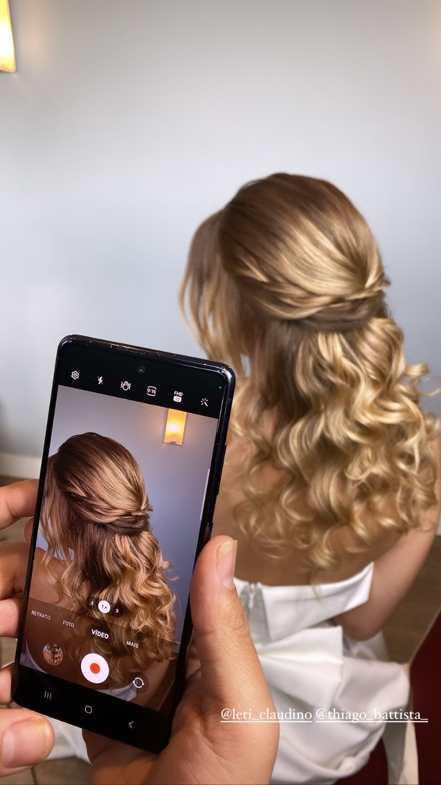
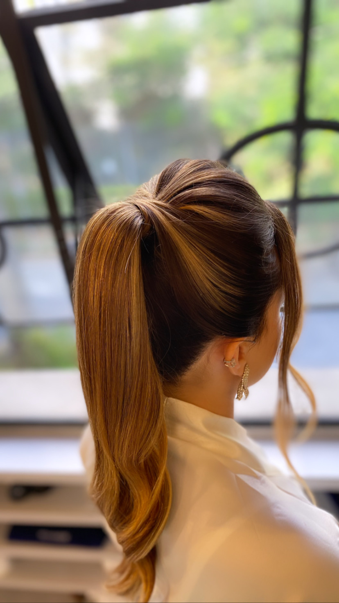
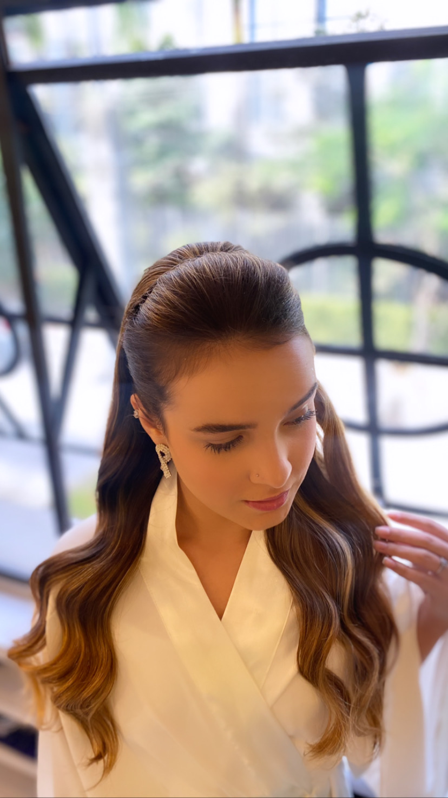
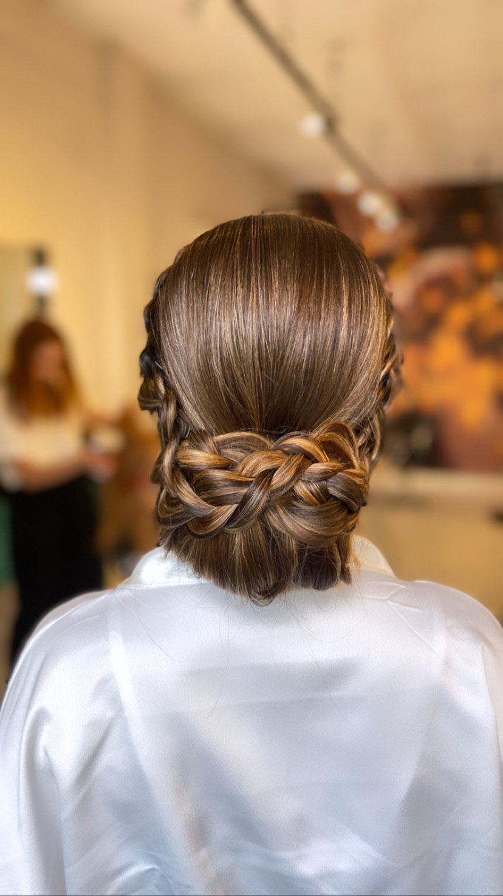
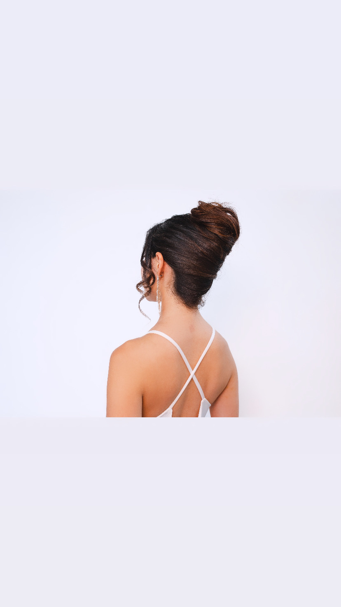
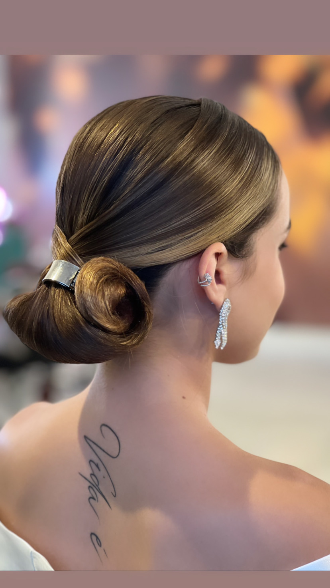
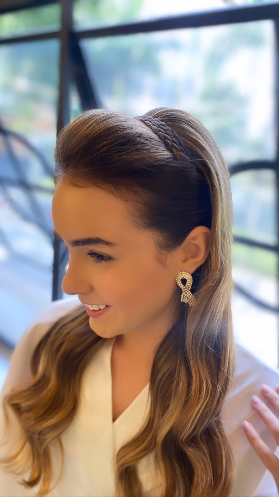

Preparação eficiente
A base para dar estrutura, controle e acabamento antes de montar qualquer penteado.
Aprenda preparação, montagem e acabamento para criar penteados elegantes, comerciais e muito pedidos — mesmo que hoje você ainda trave na hora de finalizar.
12x de R$ 12,41 ou R$ 120,00 à vista • Pagamento seguro pela Eduzz


Não adianta decorar penteado se você ainda se perde na preparação, no volume, na proporção ou no acabamento. Aqui você aprende os clássicos que nunca saem de moda e entende o raciocínio por trás da construção.
É um conteúdo direto ao ponto, visual e prático para assistir, pausar, voltar e repetir até ganhar segurança.
Você vai estudar estruturas que aparecem o tempo todo em atendimentos para festas, madrinhas, eventos e produções em salão.





A base para dar estrutura, controle e acabamento antes de montar qualquer penteado.
Clássico, limpo e muito comercial para salão, eventos e produções formais.
Elegante e sofisticado, perfeito para construir um portfólio mais refinado.
Um visual romântico, leve e muito pedido por madrinhas e convidadas.
Mais repertório para variar seus atendimentos sem perder a lógica da montagem.
Presença, altura e polimento para um dos penteados mais desejados.
A fundação que valoriza qualquer produção e melhora o resultado final.
Os clássicos ajudam você a dominar proporção, fixação, acabamento e leitura do cabelo. Depois disso, fica muito mais fácil evoluir para penteados elaborados e para o método completo Destrave.
O primeiro passo para ganhar confiança, aprender os clássicos e começar a pentear com mais profissionalismo.
Você será redirecionada para o checkout seguro da Eduzz.
Após a compra, o acesso será liberado conforme as instruções enviadas pela plataforma Eduzz.
O curso é uma porta de entrada para ganhar segurança nos clássicos. Ele é ideal para quem quer construir base e destravar a prática.
Sim. Você pode assistir, pausar, voltar e acompanhar cada detalhe no seu ritmo.
Preparação eficiente, Coque Bola, Coque Chignon, semi preso com tira de trança, semi preso intercalado, rabo de cavalo com volume e escova com volume.
Não. Ele funciona como primeiro passo antes do método completo Destrave.